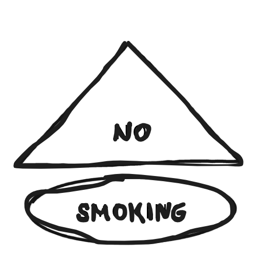

やめた日時
1日にすっていた本数
1箱の値段（円）
1箱の本数
ごほうび目標（なくてもOK）
スタート
※データはこのスマホの中だけに保存されます。
Smoke-free for
0
日
00:00:00
¥0
うかせたお金
0本
すわなかった本数
0回
がまんできた回数
0日
さいちょう記録
🎁
すいたいかも！
からだの回復のめやす
※WHOなどが紹介している一般的なめやすです。個人差があります。
設定
吸っちゃった…
1日にすっていた本数
1箱の値段（円）
1箱の本数
ごほうび目標
保存して戻る
キャンセル
すべてのデータをけす
吸って
60
吸いたい気持ちは、たいてい数分でおさまります。
水をのむ・歯をみがく・少し歩く、もおすすめ。
のりこえた！
clause